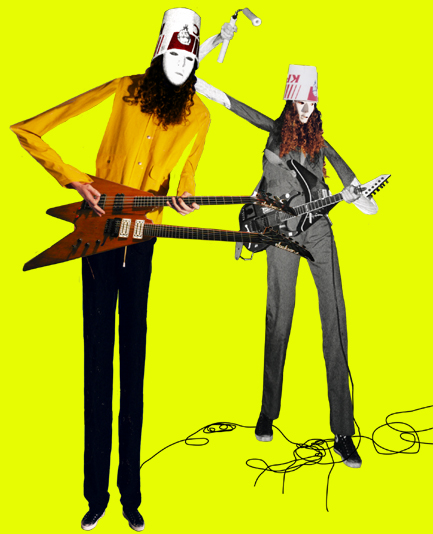 Clips 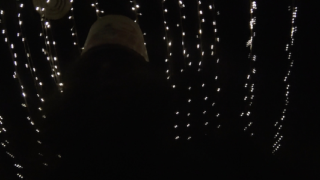 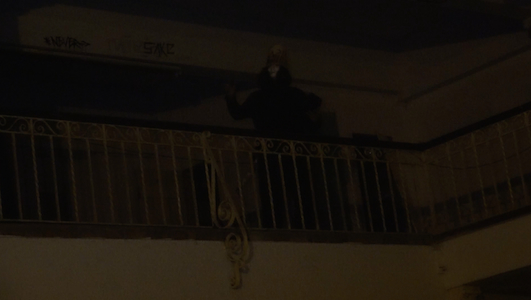 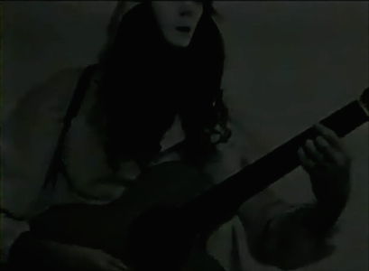 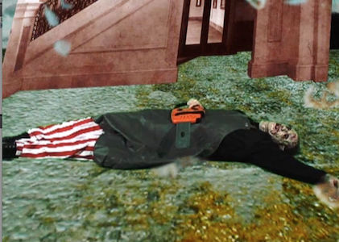 Good to Stay Warm 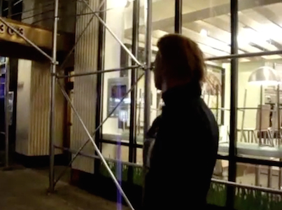 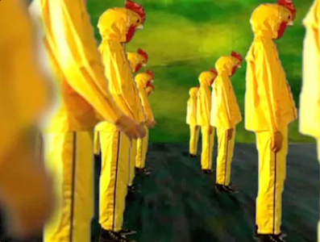 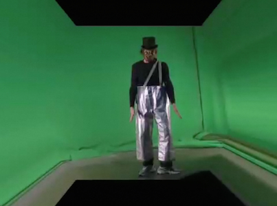 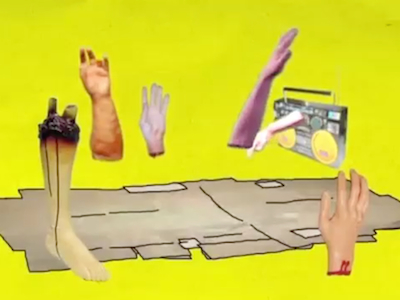 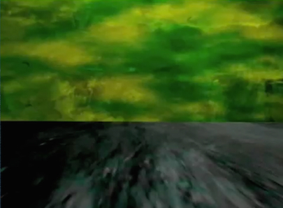 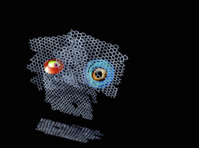 Spiral Dune 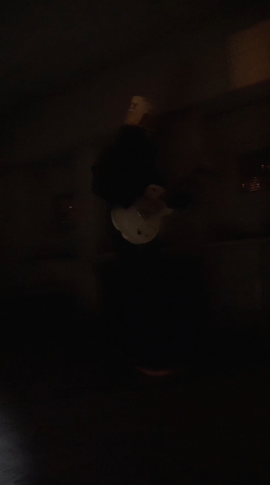 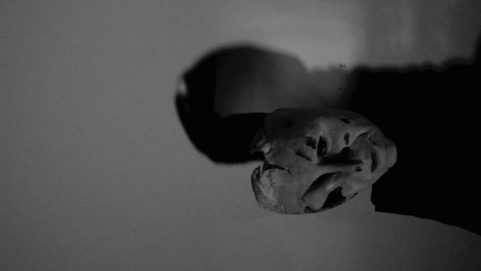 Dante's Lobby Tub Chickens 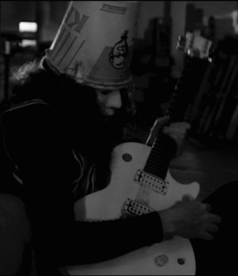 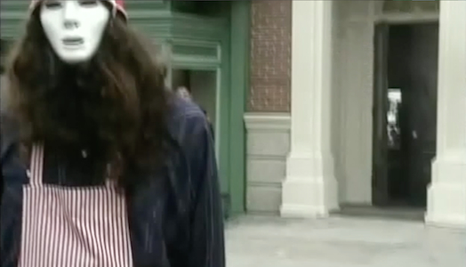 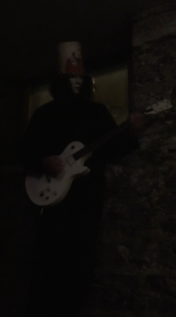 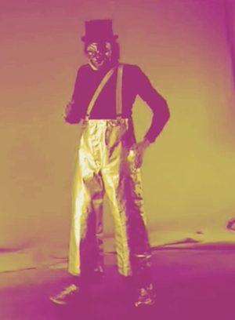 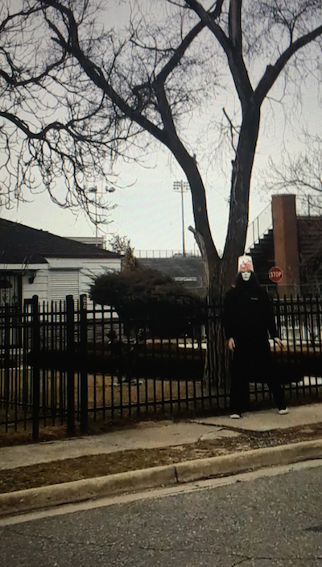 The Jackson's Home Gary, Indiana 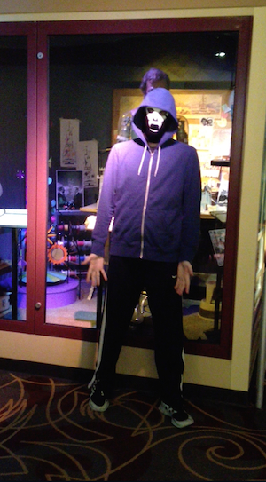
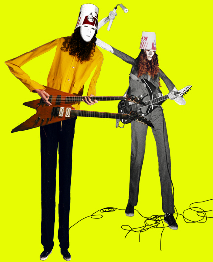
Clips
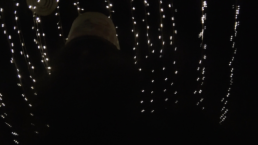
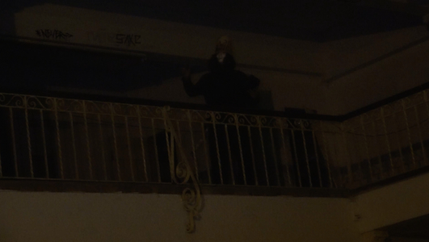
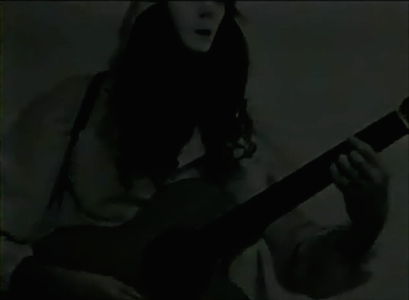
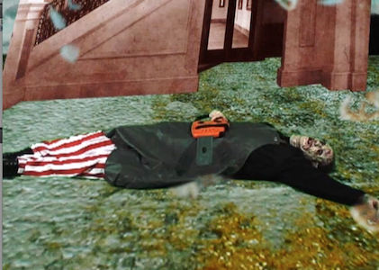
Good to Stay Warm
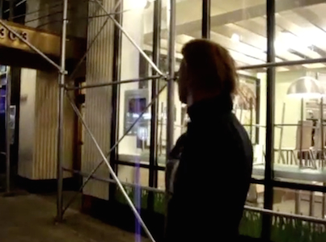
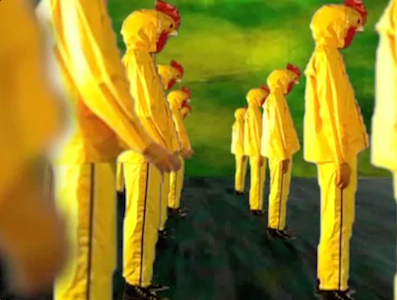
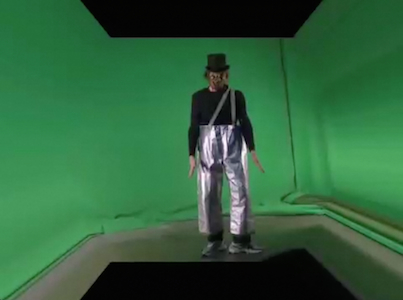
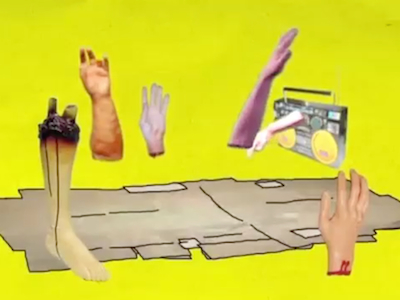
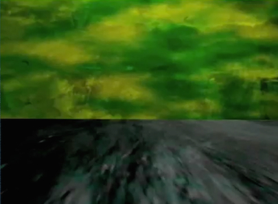
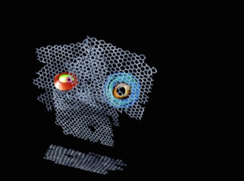
Spiral Dune
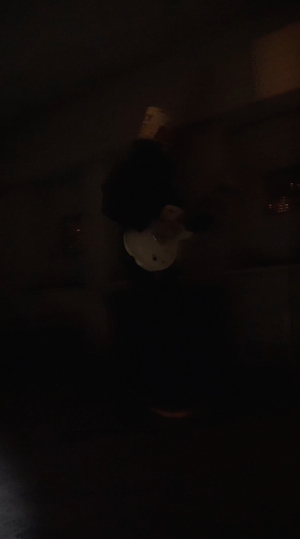
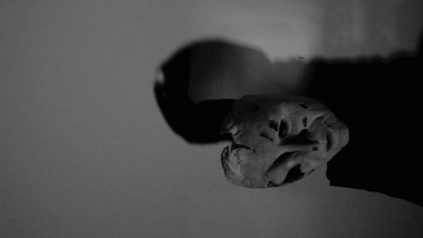
Dante's Lobby
Tub Chickens
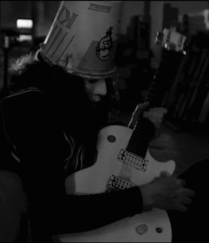
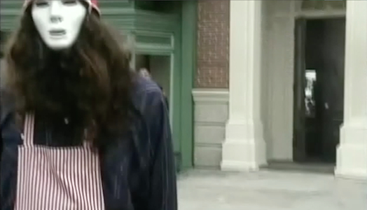
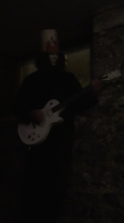
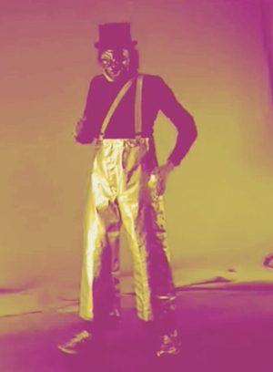
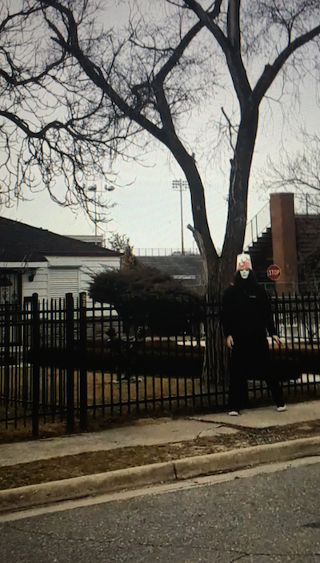
The Jackson's Home Gary, Indiana
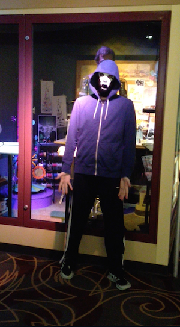